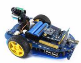

2 GPIO
2.1 ¿Qué es eso?¿Es importante?
Pues sí que es importante para la robótica. GPIO significa General Purpose Input Output (GPIO) es el sistema que tiene la Raspberry de entradas y salidas de uso general. En la figura lo tienes marcados como naranjas:

Su gran ventaja con respecto al Arduino es la cantidad de pines GPIO que están disponibles junto con la posibilidad de programar diréctamente en la Raspberry, pero su desventaja es que no pueden leer entradas analógicas, para ello hay que usar un componente exterior o un Arduino.
2.2 Tensiones
Otra desventaja con respecto al Arduino: Están diseñados para 3.3V NO conectes componentes de 5V o de lo contrario ESTROPEARÁS LA RASPBERRY DE FORMA IRREVERSIBLE debido a que todos los pines están sin protección de buffer.
2.3 Corrientes
Los GPIO están diseñados para ofrecer 3mA por cada pin, suficiente para encender LEDs pero no pidas más o te cargarás la RASPBERRY:
Y por supuesto los leds no a lo bruto, sino a través de una resistencia ¿de qué valor?
Voltios máximos 3.3V Intensidad máxima 3mA luego:
R = V/I = 3.3/3 = 1.1 kOhm COMO MÍNIMO o sea, mejor que no!
2.4 ¿QUE PUEDO CONECTAR PUES DIRÉCTAMENTE?
PRACTICAMENTE NADA sólo un led o un interruptor/pulsador con una resistencia de como mínimo 1.1K
2.5 QUE PUEDO CONECTAR INDIRECTAMENTE
Casi de todo a través de alguna Shield o interface, por ejemplo:
- Shield Pibrella muy, muy básico
- Shield GrovePi+ ya permite todo tipo de sensores
- AlphaBot un robot ya en movimiento.
2.5.1 Pibrella
Esta shield es muy, muy básica que tiene 3 leds, un pulsador, un buzzer y dos conectores de extensión.

2.5.2 GrovePi+
Esta shield tiene un buen precio y muchas posibilidades y muy buena página web de proyectos:


2.5.3 Alphabot
- CURSO EN AULARAGON Programación con Python de este AlphaBot con webcam


Raspberry muy básico por Javier Quintana Peiró bajo licencia Creative Commons Reconocimiento-NoComercial-CompartirIgual 4.0 Internacional License.